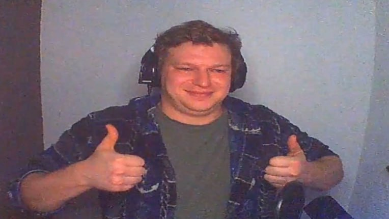

CS
Когда хочется собраться и зайти в катку нормально. Иногда получается красиво.
Иногда чат запоминает момент раньше, чем ты сам.

Здесь нет ощущения, что всё заранее придумано. Сегодня это может быть CS, завтра — тунчазы, потом внезапно фильм, а через полчаса уже вообще другая игра. Не “идеальный канал”, а живой стрим, где всегда есть шанс на хороший момент, странную шутку и чат, который всё это подхватывает.
Иногда стрим про попадания. Иногда — про то, как всё летит в стену. Смысл примерно в этом и есть.
Это стрим без ощущения стерильности. Он не пытается быть идеально отполированным, не держится за один жанр и не делает вид, что здесь всё под контролем. Если хочется сесть в CS — будет CS. Если день просит тунчазов — будут тунчазы. Если настроение упирается в фильм, разговоры или какой-то внезапный рандом — значит, стрим спокойно повернёт туда.
В этом и фишка: канал не выглядит как “готовая коробка”. Он живой. Его собирают момент, настроение, чат и то, что прямо сейчас лучше всего работает в кадре. Поэтому сюда заходят не только за игрой, а за общей атмосферой. За ощущением, что ты попал не в пустой интерфейс, а в эфир, где что-то реально происходит.
Здесь чат — не декоративная колонка. У него своя жизнь: модератор, обычные сообщения, редкие донаты и ощущение плотного потока, а не повторяющихся трёх фраз.
Не за “идеальной витриной”. За тем, что стрим может быть смешным, кривым, шумным, иногда даже внезапно уютным — и от этого только лучше.